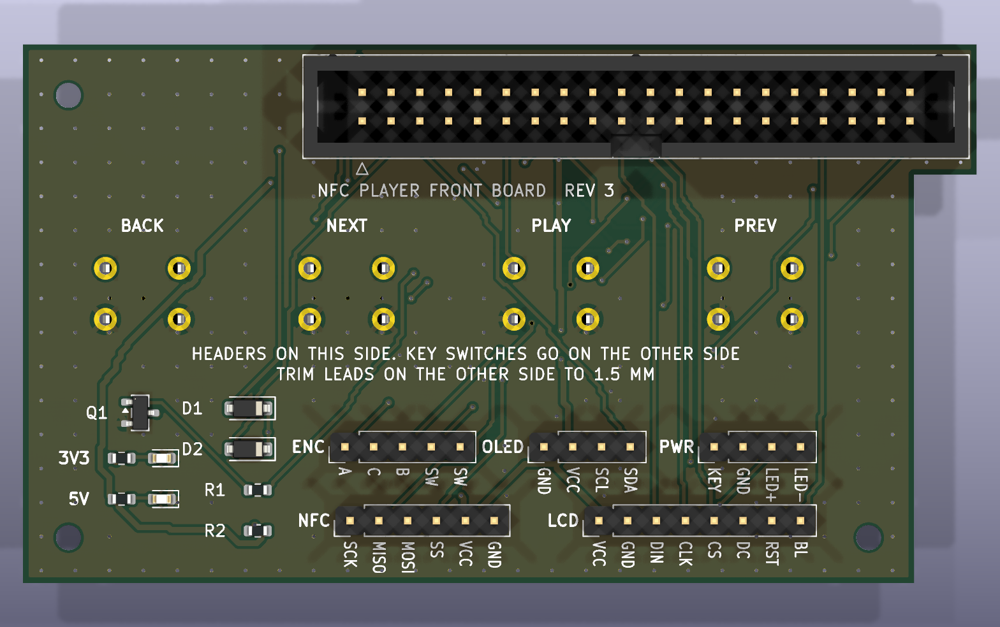
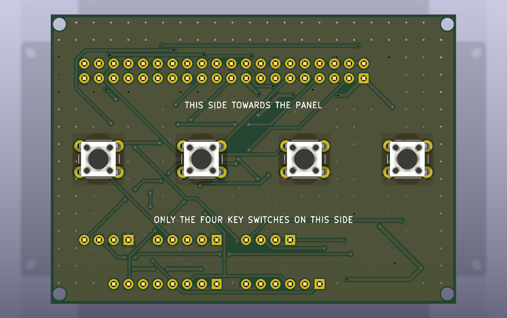

NFC Album Player
Put a card in, the album plays. This guide takes you from a bag of parts to a working player on the bench: the electronics, the wiring and the software. The case has two guides of its own: the 3D printing guide and the assembly guide.
What has been tested. Everything in this guide has been built and run on a real Pi except the 2-inch display, which so far has only run in the simulator; the screen tested on the Pi is the 0.91-inch OLED. That covers the setup script, the DAC, the NFC reader, the knob and buttons, the power key and light, USB drive mode and the web remote. The player logic, screens and web remote are also tested without the hardware, in the simulator. Joining a new Wi-Fi network from the player's settings is new and has so far been tried only in the simulator. Each wiring step below ends with a check command, so a fault shows up one part at a time.
Overview
- Raspberry Pi Zero 2 W runs Raspberry Pi OS Lite, MPD (the music player) and the player program.
- Raspberry Pi DAC Pro sits on the Pi's header and provides the 3.5 mm and RCA outputs.
- Display and NFC reader share the Pi's SPI bus, each with its own chip-select pin.
- Knob, four buttons and a power key connect to plain GPIO pins.
- Music lives in one large file on the SD card. Plug the Pi's USB port into a computer and that file appears as a drive called
MUSIC. - A web page served by the Pi at
http://nfcplayer.localcontrols playback and takes uploads from any phone or computer on the same Wi-Fi.
Parts
| Part | What to get | Approx. | Notes |
|---|---|---|---|
| Computer | Raspberry Pi Zero 2 W | £15 | Needs a 2×20 pin header. Solder one on if yours has none (the "WH" version has it fitted). |
| DAC | Raspberry Pi DAC Pro | £24 | 3.5 mm and RCA (white and red) out. |
| Front board and ribbon (for the case) | The small board in NFC-Player-Case/front-board/, made and fitted with its small parts by a board maker, and a 40-way IDC ribbon cable, female at both ends | £25 | Only for the finished case: it sits behind the keys and replaces the jumper wires of step 5. On the bench, wire straight to the DAC's pins. See Front board for the case. |
| SD card | 256 GB microSD, A2 rated | £20 | About 700 FLAC albums. 512 GB also works. |
| Display | Waveshare 2inch LCD Module (ST7789, 240×320, SPI) | £12 | Other ST7789 240×320 boards should work with the same wiring. |
| Display (alternative) | 0.91-inch 128×32 SSD1306 OLED (I2C, 4 pins) | £4 | Cheaper and simpler to wire, but much less nice: one colour, a compact text-only layout and no cover art. This is the screen tested on the real Pi so far. Get one or the other. |
| NFC reader | PN532 NFC module V3 (the red Elechouse-style board) | £8 | Has two small switches to choose SPI mode. |
| NFC cards | NTAG215 blank PVC cards | £8 | NTAG213/216 and MIFARE Classic cards also work. Only the card's ID is read. |
| Knob encoder | 24-click rotary encoder with push switch, from a known maker: The Pi Hut "Rotary Encoder + Extras", or a Bourns PEC11R or Alps EC11 | £4 | Clicks as it turns. Normal-pitch pins that fit a breadboard. Avoid unbranded multi-packs; they feel loose and wear quickly. |
| Knob | Solid aluminium, 30 mm (the case takes up to 30 mm), with a set screw, to fit a 6 mm shaft | £8 | Most of the quality feel comes from this: weight, diameter and no wobble. Check your encoder's shaft (6 mm D-shaped or knurled) before buying. |
| Buttons | 4 push buttons: 6 × 6 × 5 mm through-hole tactile switches. The same ones go on the case's front board, under printed key caps | £3 | Previous, play/pause, next and back. |
| Power button | 1 momentary metal push button with a light: flat head, 12 mm mounting diameter, 1NO, 3–6 V LED (for example sourcing map's, with a green LED) | £5 | Turns the player off safely and on again, and its light shows the Pi is on. It must be momentary, not latching or self-locking. Any tactile switch does for testing. In the case its 3–6 V LED has its own resistor, so fit a wire link for R2 on the front board. |
| Diodes | 2 Schottky diodes, e.g. BAT43 or 1N5817 | £1 | For the power key. Ordinary silicon diodes such as the 1N4148 drop too much voltage and may not register a press. |
| Power light | One 3 mm or 5 mm LED and a 330 Ω resistor | £1 | Lights within a couple of seconds of power, long before the screen, and goes off once the Pi has shut down. In the case, the power key's own light does this, through the front board. |
| Bench bits | Breadboard, jumper wires (male–female and male–male) | £8 | |
| USB cable | Micro-USB to USB-C (or to USB-A) data cable | £5 | Powers the Pi from the computer and carries the music. Charge-only cables will not work. |
Optional later upgrade: a Bourns EM14 optical encoder turns smoothly with no clicks. It costs about £27, comes from DigiKey, Mouser or Farnell, and needs extra parts; see the note at the end of the knob section.
For the case stage later: a panel-mount USB-C socket.
Tools and software
Tools
- Soldering iron and solder (Pi header and reader pins if not fitted).
- Multimeter, useful for finding pin 1 on the DAC's header and checking connections.
On your computer
- Raspberry Pi Imager, free from raspberrypi.com/software, to write the SD card.
- A terminal with
sshandrsync, for connecting to the Pi and copying the code. macOS and Linux have both built in; on Windows, use WSL. - This project folder,
~/Projects/nfc-player.
On the Pi (installed for you by the setup script)
- Raspberry Pi OS Lite, 64-bit: the operating system, without a desktop.
- MPD: decodes the music and sends it to the DAC.
- Python 3 with Pillow, NumPy, spidev, gpiozero, lgpio and python-mpd2.
- exfatprogs: creates and checks the music drive.
Step 1Flash the SD card
- Put the microSD card in your computer and open Raspberry Pi Imager.
- Device: Raspberry Pi Zero 2 W.
- Operating system: Raspberry Pi OS (other) → Raspberry Pi OS Lite (64-bit).
- Storage: your SD card.
- When asked about customisation, edit the settings:
- Hostname:
nfcplayer - Username and password: your choice. Using the same username as on your computer saves typing later.
- Wi-Fi: your network name and password. The Zero 2 W only does 2.4 GHz.
- Services: enable SSH with password authentication.
- Hostname:
- Write the card. Menus differ slightly between Imager versions, but these are the settings that matter.
Wi-Fi is used for setup, updates and the web remote. The player works without it; only the web page needs it. To move the player to another network later, there is no need to reflash: use Connect to a new network in the player's settings (see Changing Wi-Fi).
Step 2First boot
- Put the card in the Pi. Leave everything else disconnected for now.
- Plug the micro-USB cable into the Pi port marked USB (the one nearer the middle of the board, not PWR IN) and the other end into your computer. That one cable powers the Pi and will later carry music.
- Wait about two minutes for the first boot, then connect:
ssh nfcplayer.localIf your Pi username differs from your computer's, use ssh yourname@nfcplayer.local, and add yourname@ the same way in later commands.
Step 3Fit the DAC
- Shut the Pi down with
sudo poweroff, wait for the green light to stop, and unplug it. Do this before every wiring change. - Plug the DAC Pro straight onto the Pi's header. Check that pin 1 lines up.
- The DAC's header passes every pin of the Pi through on top. Those pins are where the display, reader, knob and buttons connect in step 5, using female jumper leads. In the case, the front board's ribbon plugs onto them instead.
- Connect the DAC's 3.5 mm or RCA output to your speaker or amplifier, with its volume low.
The DAC uses GPIO 2, 3, 18, 19, 20 and 21 and the two ID pins (physical pins 27 and 28). Never connect anything else to those. The one exception is the power key, which reaches GPIO 3 through a diode (step 5).
Step 4Install the player
On your computer, copy the project to the Pi:
cd ~/Projects/nfc-player && ./deploy.shIf it reports that rsync is missing on the Pi, install it with ssh nfcplayer.local 'sudo apt-get install -y rsync' and run it again.
Then on the Pi (over SSH), run the setup script:
cd ~/nfc-player && sudo system/setup.shIt installs the software, turns on SPI and USB device mode, creates the music drive using all free space except 3 GB, installs three services, and sets up the helper the player uses to join new Wi-Fi networks. The player runs as its own user, nfc-player, which can only run the player's helpers with sudo, not anything else, so a bug in the player cannot take over the Pi. To choose the drive size yourself, use sudo MUSIC_GB=100 system/setup.sh the first time.
It will ask for a reboot:
sudo rebootAfter the reboot the player starts by itself and the web remote is available. If the DAC was not attached, setup says so and configures silent playback, so everything except sound can be tried straight away.
Once the DAC is fitted, run setup again so it can find it:
cd ~/nfc-player && sudo system/setup.shIt should print Sound card: … and All set. If it still says no DAC was found, add the line dtoverlay=rpi-dacpro to the end of /boot/firmware/config.txt, reboot and run it again.
Check the DAC is listed:
aplay -lStep 5Wire and test
Add one part at a time, in this order, and run its check before moving on. Power off before each change. Stop the player while testing so the pins are free:
sudo systemctl stop nfc-player- Display
- NFC reader
- Shared by display and reader
- Knob
- Buttons
- Power light
- Used by the DAC, leave alone
Display
| Display pin | Pi pin | Pi name |
|---|---|---|
| VCC | 1 | 3.3 V |
| GND | 9 | Ground |
| DIN | 19 | GPIO 10 (MOSI) |
| CLK | 23 | GPIO 11 (SCLK) |
| CS | 24 | GPIO 8 (CE0) |
| DC | 22 | GPIO 25 |
| RST | 13 | GPIO 27 |
| BL | 33 | GPIO 13 |
cd ~/nfc-player && python3 -m player.hw.check displayYou should see red, green, blue and white bars above two lines of text for ten seconds. If it is upside down, add --rotate to that command to confirm, then add --rotate 180 to the service (see Reference).
Using the 0.91-inch OLED instead? It has four pins and shares the I2C bus with the DAC:
| OLED pin | Pi pin | Pi name |
|---|---|---|
| VCC | 1 | 3.3 V |
| GND | 9 | Ground |
| SDA | 3 | GPIO 2 (SDA) |
| SCL | 5 | GPIO 3 (SCL) |
cd ~/nfc-player && python3 -m player.hw.check display --ssd1306Then choose the OLED on the web remote's Setup page (/setup) so the player uses it after a restart.
NFC reader
First set the module's two small switches for SPI: switch 1 off, switch 2 on. Use the 8-pin row labelled SCK, MISO, MOSI, SS.
| PN532 pin | Pi pin | Pi name |
|---|---|---|
| VCC | 17 | 3.3 V |
| GND | 20 | Ground |
| SCK | 23 | GPIO 11 (SCLK), shared with the display |
| MOSI | 19 | GPIO 10 (MOSI), shared with the display |
| MISO | 21 | GPIO 9 (MISO) |
| SS | 26 | GPIO 7 (CE1) |
| IRQ, RSTO | – | Not connected |
Pins 19 and 23 each take two wires (display and reader). Join them on a breadboard row.
cd ~/nfc-player && python3 -m player.hw.check nfcIt should print the reader's firmware version, then a card ID each time you hold a card to the antenna and card removed when you take it away.
Knob
The encoder has three pins on one side (A, common, B, with common in the middle) and two on the other (the push switch). It only ever connects pins to ground, so it needs no power and no resistors.
| Encoder pin | Pi pin | Pi name |
|---|---|---|
| A (outer pin, three-pin side) | 29 | GPIO 5 |
| C, common (middle pin) | 6 | Ground |
| B (other outer pin) | 31 | GPIO 6 |
| Switch, one pin | 37 | GPIO 26 |
| Switch, other pin | 34 | Ground |
cd ~/nfc-player && python3 -m player.hw.check inputsEach click should print about +11 clockwise or -11 anticlockwise, and one full turn should add up to about 256. Pushing prints knob; holding for over half a second prints knob_long. If clockwise is negative, swap the A and B wires or add --encoder-reverse to the service.
In use, each click changes the volume by 2 and moves one line in a list. Spinning quickly changes the volume faster.
Fit the knob so it sits about 1 mm clear of the surface and tighten its set screw onto the flat of the shaft. A knob that rubs or wobbles is what makes a control feel cheap.
Upgrading to the smooth Bourns EM14 later. Order EM14A0D-C24-L064S (¼" shaft, so a 6.35 mm knob) plus a 1.27 mm pitch adapter board, two 10 kΩ and two 20 kΩ resistors. Its six pins are marked – A 1 2 + B.
Wire + to pin 2 (5 V), – to pin 6, 1 to pin 37 and 2 to pin 34. A and B sit near 5 V, too much for the Pi, so each goes through a 10 kΩ resistor to its GPIO pin (A to pin 29, B to pin 31), with a 20 kΩ resistor from that GPIO pin to ground.
Before connecting pins 29 and 31, measure each divided signal while turning the knob: it must switch between about 0 V and 2.5–3.3 V, never above 3.4 V. Then test with python3 -m player.hw.check inputs --em14 and add --encoder em14 to the service.
Buttons
Each button connects its GPIO pin to ground when pressed. One side of every button goes to ground (pin 14); the other side goes to its own pin:
| Button | Pi pin | Pi name |
|---|---|---|
| Previous | 7 | GPIO 4 |
| Play / pause | 11 | GPIO 17 |
| Next | 36 | GPIO 16 |
| Back | 32 | GPIO 12 |
| Power | 18 and 5 | GPIO 24 and GPIO 3, each through a diode (below) |
| Common side of all five | 14 | Ground |
Run the same check as for the knob. Each press should print the button's name. Holding back for 2 seconds should print back_long once. Holding previous or next should print prev_hold or next_hold repeatedly until you let go; a short press of either prints its name when you let go. The power key prints power, and holding it for 2 seconds prints power_long; during the check it does not shut anything down.
The power key
A press of the power key puts the player on standby: the screen goes dark and playback stops, but Linux keeps running, so a card or a key wakes it at once. Holding it for 2 seconds turns the player off safely, so the SD card is never cut off mid-write, and pressing it again turns it on. It needs two pins: the player watches GPIO 24 for presses, and GPIO 3 is the only pin that wakes a Pi that has shut down. GPIO 3 also carries the DAC's control signals, so each pin reaches the key through its own diode. The diodes stop the DAC's signals from looking like key presses.
- One side of the key goes to ground (pin 14), like the other buttons.
- The other side of the key goes to the striped end of both diodes.
- The plain end of one diode goes to pin 18 (GPIO 24); the plain end of the other goes to pin 5 (GPIO 3).
Check the diodes' direction before powering up: stripes towards the key. Put the key somewhere it will not be pressed by accident: one press puts the player on standby, and holding it turns the player off. The case does not have a hole for it yet.
Power light
The screen takes a while to show anything after the Pi is switched on, so a small LED shows that it has started. The Pi's firmware switches it on within a couple of seconds of power, before Linux starts, and it goes off at the very end of a shutdown, together with the screen. It stays on during standby. Off means the Pi is off and can be unplugged.
| Part | Pi pin | Note |
|---|---|---|
| LED long leg (+), through a 330 Ω resistor | 15 | GPIO 22 |
| LED short leg (−), the flat side of the rim | 25 | Ground |
The resistor can go on either leg and either way round; without it the LED draws too much current from the pin. The setup script adds the line gpio=22=op,dh to /boot/firmware/config.txt, which is what switches the light on, so run it again if you set up the Pi before this part was added, then reboot. To check the wiring without rebooting, run pinctrl set 22 op dh (on) and pinctrl set 22 op dl (off).
Start the player
sudo systemctl start nfc-playerThe display should show Place a card. To watch what the player is doing:
journalctl -u nfc-player -fStep 6Add music
- With the Pi connected to the computer by its USB port, the display shows Connected to a computer. Push the knob.
- A drive called
MUSICappears in your file manager. Copy albums onto it asArtist/Album/tracks, for exampleNina Simone/Pastel Blues/01 Be My Husband.flac. - Put a
cover.jpgin an album's folder to show its cover. Without one, the cover stored inside the tracks is used. - Eject
MUSICin your file manager. The player takes the drive back, checks it and rescans. If the screen stays on Transfer mode after ejecting, hold the knob for a second.
FLAC, MP3, AAC/M4A, Ogg, Opus, WAV and AIFF are recognised. The player cannot play while the computer has the drive.
Albums, artists and lists
A card can be linked to any of three things:
- Album. Albums come from the tags inside the files, so a flat folder of mixed songs, such as
From iTunes, splits into its real albums and plays them in track order. Files without tags fall back to the folders: the folder is the album and the folder above it is the artist. - Artist. Every album by that artist, oldest first.
- List. A folder whose songs come from more than one album, played as it is in file name order. A folder that holds a single album is not offered as a list.
An album is always the songs of one album within one folder. The same album split across two folders shows up twice.
You can also add music over Wi-Fi from the web remote. USB is much faster for a large collection; the web page suits an album or two.
Always eject before unplugging. An unplug mid-copy is repaired on the next start, but the file being copied will be lost.
To confirm sound reaches the DAC once there is music on the drive:
sudo systemctl stop nfc-player && cd ~/nfc-player && python3 -m player.hw.check audio; sudo systemctl start nfc-playerStep 7Use it
The user manual goes through every screen with pictures. In short:
| You do | It does |
|---|---|
| Insert a new card | Asks whether to link an album, an artist or a list, then shows that list. Turn the knob to choose, push to link. It starts playing. Cards can also be linked from the web remote. |
| Insert a linked card | Plays its album, artist or list from where that card last stopped. |
| Remove the card | Pauses and remembers the position. |
| Turn the knob | Volume. |
| Push the knob, or play/pause | Pause and resume. After the album ends, plays it again. |
| Previous / next | Skip tracks. Previous restarts the track if more than 3 seconds in. |
| Hold previous / next | Rewind / fast-forward through the track while held, faster after 3 seconds. Fast-forward runs on into the next track; rewind stops at the start of the track. |
| Back, while playing | Shows the tracks of what is playing, with the current one marked. Turn the knob to choose, push to play it. Back again closes the list. Playback carries on while you browse. |
| Hold back for 2 seconds, while playing | Goes back to the start of the album, artist or list and plays it from the first track. |
| Hold the knob for 1 second | With a card in: link the card to something else, unlink it, or close. With no card: settings (Wi-Fi, volume limit, deleting music, the web address, restart). |
| Back | Leaves a menu or list. |
| Press power | Standby: remembers where the card stopped, stops playing and switches the screen off. Linux keeps running, so a card, any key or the knob wakes it at once; a card carries on where it stopped. The power light stays on. If the drive is connected to a computer, or the web page is uploading, it says so and stays on: eject or wait, then press power again. |
| Hold power for 2 seconds | Does the same, then shows Turning off while the Pi shuts down. When the screen and the power light go dark, the player is off and can be unplugged. Works from standby too. |
| Press power while it is off | Turns it on. The power light comes on within a couple of seconds, then the screen shows the logo until the player is ready, in about half a minute. |
Step 8Web remote
On any phone or computer on the same Wi-Fi, open:
http://nfcplayer.localNothing needs installing; the player serves the page itself.
Control
- The top panel shows what is playing, with previous, play/pause, next and a volume slider. It follows the knob and buttons, and they follow it.
- Switch between Albums, Artists and Lists above the search box. Tap any row to play it, with or without a card in the slot.
- The card still rules: inserting a linked card plays that card's album, and removing the card pauses whatever is playing.
- An album started from the page does not change the place a card remembers. Put the card back in and it resumes where the card left off.
Link cards
- With a card in the slot, a line under the controls says whether it is linked, and each album, artist and list gets a Link card button.
- Press Link card next to one. The card is linked and it starts playing, exactly as if you had linked it with the knob.
- Unlink card removes the link. Linking a card that already has an album simply replaces it.
This means the player is fully usable before the display, knob and buttons are fitted: with only the DAC and reader connected, load music over USB or the page, link cards from the page, and control playback from it.
Upload
- Under Add music, press Choose folder and pick an album folder. It is copied with its name, so
Pastel Bluesbecomes an album called Pastel Blues. - To file it under an artist, type the artist in Put inside first, for example
Nina Simone. Picking a whole artist folder that contains album folders also works. - On an iPhone, which cannot pick folders, use Choose files and type the full folder in Put inside, for example
Nina Simone/Pastel Blues. - Keep the page open until every file says done. The album appears in the list a few seconds after the last file.
Music keeps playing during an upload. Only music and cover image files are accepted; anything else is skipped. Uploads are refused while the drive is connected to a computer over USB, and USB transfer waits until uploads finish.
Delete
- Press Files next to an album to see what is in it, with each file's size.
- Press Delete next to a file to remove just that track or cover, or Delete whole album to remove the folder.
- Confirm when asked. Deleting cannot be undone; there is no bin.
- Deleting an album's last track removes the album, including its cover.
- An album that shares its folder with other albums loses only its own tracks. Deleting a whole list removes the folder and every album in it. Artists have no Files button; delete their albums one by one.
- An artist folder is removed once its last album is gone.
- If the album is playing, it stops within a few seconds.
- A card linked to a deleted album stays linked to nothing: the page says so, and you can link it to another album.
There is no password. Anyone on your Wi-Fi can open the page, change what is playing, relink the card in the slot, and add or delete music. That is fine on a home network you trust; do not use it on shared or public Wi-Fi. To turn the page off, change --web-port 80 to --web-port 0 in the service (see Reference).
The page cannot rename or move music. Do that over USB.
Front board for the case
On the bench, the parts are wired straight to the DAC's pins as in step 5. In the case, a small printed circuit board, 84 × 47.5 mm, takes the place of those jumper wires. It lies flat behind the front panel, behind the four keys, on a 1.3 mm printed spacer (see how the keys are held). The keys' tactile switches are soldered to its front. A 40-way ribbon joins its box header to the pins on top of the DAC, so it reaches every pin of the Pi. The screen, NFC reader, knob and power key each plug into a labelled pin header on it. It also carries the two diodes the power key needs, a transistor that lights the power key from 5 V, and two small LEDs that light while the board is getting each supply from the Pi: orange for 3V3 and red for 5V. The small parts are surface-mount and come fitted by the board maker; you solder only the headers and the key switches.


Order it
The board is drawn in KiCad by NFC-Player-Case/front-board/board.py from the numbers in case.py, so it always matches the panel. Upload nfc-front-board-gerbers.zip to any board maker (JLCPCB, PCBWay, Aisler and others). Choose 2 layers, 1.6 mm FR-4, any colour and any finish.
To have the small parts fitted, turn on the maker's assembly service and choose assembly on the bottom side: the board's back, where the parts go, is KiCad's bottom. For JLCPCB, upload nfc-front-board-jlc-bom.csv as the BOM and nfc-front-board-jlc-cpl.csv as the placement (CPL) file. The BOM gives an LCSC part number for each part, all from JLCPCB's basic range when this was written except the orange LED, an extended part that adds a small one-off fee; if one is out of stock, pick another of the same value and package. In the placement preview, check each part sits on its pads and matches its outline on the board, above all the diodes, the LEDs and the transistor, which only work one way round. Boards drawn in KiCad often show a part turned 90° or 180° there, most often on the bottom side; turn any that are wrong in the preview before you order. Assembly is only worth it for at least two boards; with set-up and postage, expect a total of roughly £20–30. The schematic is a PDF, and the KiCad project in NFC-Player-Case/front-board/ opens in KiCad 10 if you want to change anything.
Parts on the board
| On the board | Part | Qty | Fitted by | Note |
|---|---|---|---|---|
| J1 | 2 × 20 shrouded box header, 2.54 mm, straight | 1 | You | Shrouded 2x20 box header, 2.54 mm |
| SW1, SW2, SW3, SW4 | 6 × 6 mm through-hole tactile switch, 5 mm tall (sold as 6x6x5 mm) | 4 | You | 6 x 6 mm through-hole tactile switch, 5 mm tall, on the side facing the panel |
| J2 | 1 × 8 straight pin header, 2.54 mm | 1 | You | Straight pin header, 2.54 mm |
| J3 | 1 × 6 straight pin header, 2.54 mm | 1 | You | Straight pin header, 2.54 mm |
| J5, J6 | 1 × 4 straight pin header, 2.54 mm | 2 | You | Straight pin header, 2.54 mm |
| J4 | 1 × 5 straight pin header, 2.54 mm | 1 | You | Straight pin header, 2.54 mm |
| D1, D2 | B5819W Schottky diode, SOD-123 | 2 | Board maker (LCSC C8598) | Schottky diode, 40 V 1 A, SOD-123. Cathode towards the key |
| R1 | 1 kΩ resistor, 0603 | 1 | Board maker (LCSC C21190) | Base resistor, 1 kΩ 1% 0603 |
| R2 | 220 Ω resistor, 0603 | 1 | Board maker (LCSC C22962) | Sets the power light's current, 220 Ω 1% 0603. If the button's LED has its own resistor, R2 can stay (a little dimmer) or be bridged with solder |
| Q1 | MMBT3904 NPN transistor, SOT-23 | 1 | Board maker (LCSC C20526) | NPN transistor, SOT-23. Switches the power light from 5 V |
| D3 | Orange LED, 0603 | 1 | Board maker (LCSC C160478) | Orange LED, 0603 (Lite-On LTST-C191KFKT): lit while the board has 3.3 V |
| R3 | 1 kΩ resistor, 0603 | 1 | Board maker (LCSC C21190) | 1 kΩ 1% 0603: about 1 mA through D3 |
| D4 | Red LED, 0603 | 1 | Board maker (LCSC C2286) | Red LED, 0603: lit while the board has 5 V |
| R4 | 2.2 kΩ resistor, 0603 | 1 | Board maker (LCSC C4190) | 2.2 kΩ 1% 0603: about 1 mA through D4 |
Build it
- The diodes, resistors, transistor and LEDs come fitted on the back. If the power key's LED has its own resistor (one rated 5 V or 6 V), R2 can stay, and the key lights a little dimmer; bridge R2's two pads with solder for full brightness.
- The pin headers and the 40-pin box header go on the back too: the side with the part labels. The front is marked This side towards the panel. Fit the box header with its notch where the board shows it, and hold each header square while you solder its first pin.
- On the front, trim every lead to 1.5 mm or less, so the joints fit in the openings in the spacer and the key carrier.
- Last, the four key switches on the front, in the squares marked for them. Push each fully home so it sits flat and square; a tilted switch tilts its cap. Solder them from the back, and trim their legs too.
- With a multimeter, check there is no short between 3.3 V, 5 V and ground: pins 1, 2 and 6 of the box header.
- Plug the ribbon onto the DAC and power the Pi: both LEDs should light, orange for 3V3 and red for 5V. If one stays dark, unplug and look for a bad joint or a reversed ribbon before plugging anything else in.
What plugs in where
| Header | For | Pins, from pin 1 | Lead |
|---|---|---|---|
| J2 LCD | Screen | 1 VCC · 2 GND · 3 DIN · 4 CLK · 5 CS · 6 DC · 7 RST · 8 BL | The lead that comes with the Waveshare screen: its plug into the screen, its eight female ends onto these pins, by name. |
| J3 NFC | NFC reader | 1 SCK · 2 MISO · 3 MOSI · 4 SS · 5 VCC · 6 GND | Six female-to-female leads to the reader's pins of the same names. Leave its IRQ and RSTO pins free. |
| J5 PWR | Power key | 1 KEY · 2 GND · 3 LED+ · 4 LED- | Four wires soldered to the button. KEY and GND go to its switch tags (either way round); LED+ and LED− to its lamp tags, the right way round. |
| J6 OLED | OLED (instead of the screen) | 1 GND · 2 VCC · 3 SCL · 4 SDA | Only if you use the 0.91-inch OLED: four leads to the OLED's pins of the same names. |
| J4 ENC | Knob (encoder) | 1 A · 2 C · 3 B · 4 SW · 5 SW | Five wires soldered to the encoder, ending in female leads. A, C and B are its three-pin side, C in the middle; the two SW pins are the push switch. |
The keys need no leads: their switches are on the board. The keys and the knob only pull a pin to ground, and the Pi's own pull-ups hold them high. The power key reaches GPIO 24 and GPIO 3 through D1 and D2, exactly as in step 5. GPIO 22 still switches the light, through Q1, so nothing changes in the software or in config.txt.
The box header sits straight in front of the Pi's header, the same way round: pin 1 on the right seen from the front, on the lower row. So the ribbon leaves the board, bends once and comes down onto the DAC's pins, with no twist or fold. The ribbon's red stripe marks pin 1 at both ends. On the board, pin 1 is at the triangle beside the box header, and its notch only lets the plug in one way. On the DAC there is no notch, so check before you push it on: pin 1 is the corner pin with a square pad on the Pi, at the right-hand end seen from the front of the case, and with the Pi running it reads 3.3 V, while its neighbour across the header (pin 2) reads 5 V.
Fitting the board in the case, and running the ribbon and leads, is in the assembly guide.
Changing Wi-Fi
The Wi-Fi icon in the corner of the screen shows the signal; struck through, the player is not on a network. To join a new network without a keyboard or SSH:
- With no card in, hold the knob for 1 second and choose Wi-Fi, then Connect to a new network.
- The player looks for networks, then leaves its own and starts a setup network called NFC Player Setup. The screen shows a password made up for this time only, and a code a phone camera can join from.
- Join it on a phone. The Wi-Fi page usually opens by itself; otherwise open
http://10.42.0.1. - Choose the network, type its password and press Connect. The screen says Connected to and the name when it has joined. If it cannot, the setup network comes back for another try.
The user manual has the screens. How it works:
- NetworkManager, which Raspberry Pi OS Bookworm and later use for Wi-Fi, does the work.
setup.shinstalls a small root helper,/usr/local/sbin/nfc-player-wifi, which is the only Wi-Fi command the player may run withsudo. - The Zero 2 W's radio cannot be on a network and offer one at the same time, so the player is off your network (and the web remote unreachable) while the setup network is up. It closes after 10 minutes if nobody uses it, or when you press back, and the player goes back to its saved network.
- The new network is saved alongside the old ones in
/etc/NetworkManager/system-connections/, readable only by root. The player program never stores the password. To forget a network:sudo nmcli connection delete "Network name". - While the setup network is up, every web address a phone asks for points at the player, so phones open its Wi-Fi page by themselves. That only applies on the setup network (
/etc/NetworkManager/dnsmasq-shared.d/nfc-player.conf).
Why this is safe enough. The setup network uses WPA2 with a fresh 10-character random password that appears only on the player's screen, so joining it needs someone standing at the player. The page that accepts a network only answers phones on that setup network, and only while it is open; from your home network it refuses. The Wi-Fi password is sent over that encrypted link, then handed to the helper on its input rather than its command line. For a moment it does appear on NetworkManager's own command line on the Pi, which only matters if someone else already has a login on it.
Backups and updates
The music is one large file on the SD card (/srv/nfc-player/music.img), on the same card as the operating system. Ordinary updates leave it alone. A few things put it at risk, so back up before them.
| What you do | Music safe? |
|---|---|
Update the software with apt | Yes |
Update the player with deploy.sh, or from Firmware update in its settings | Yes |
Run setup.sh again | Yes. It only creates the music drive if there is none. |
| Reflash the SD card | No. Everything on the card is erased. |
| Lose power during an update, or the card fails | Not guaranteed. The card's filesystem can be damaged. |
Update the operating system
On the Pi, over SSH:
sudo apt update && sudo apt upgrade- If it asks about
/etc/mpd.conf, keep your current version. Setup wrote that file, and replacing it would point MPD away from the DAC and the music. - If it updates the kernel, reboot afterwards with
sudo rebootand check the player comes back. - Use a steady power supply, and do not unplug the Pi while it is upgrading.
Do not upgrade from one Raspberry Pi OS release to the next in place. Back up, reflash and restore instead (below); it is more reliable.
Back up
Two things are worth keeping: the music, and state.json, which records which card plays which album and where each one stopped. Run these in a terminal on your computer:
mkdir -p ~/nfc-player-backup && rsync -a nfcplayer@nfcplayer.local:/mnt/music/ ~/nfc-player-backup/music/scp nfcplayer@nfcplayer.local:/var/lib/nfc-player/state.json ~/nfc-player-backup/Over Wi-Fi the first command is slow for a large collection. For a big library, connect the Pi to the computer by USB instead, accept the transfer on the player, and copy the contents of MUSIC in your file manager.
Your cards are not in the backup, but they do not need to be: each card only carries an ID, and state.json holds what that ID plays.
Reflash and restore
- Back up as above and check
~/nfc-player-backuphas your albums. - Flash the card again (step 1), boot it (step 2), fit the DAC if it is not already on, and install (step 4). Setup creates a new, empty music drive.
- Put the card links back, from your computer:
scp ~/nfc-player-backup/state.json nfcplayer@nfcplayer.local:/tmp/state.json && ssh -t nfcplayer@nfcplayer.local 'sudo systemctl stop nfc-player && sudo cp /tmp/state.json /var/lib/nfc-player/state.json && sudo chown nfc-player: /var/lib/nfc-player/state.json && sudo systemctl start nfc-player'nfc-playerin thechownis the user the player runs as, made by setup, not your own username. - Copy the music back by USB (step 6), dragging the contents of
~/nfc-player-backup/musicontoMUSIC. The web page can also do it but is slow for more than an album or two. - Open the web page and check the albums are listed and a card plays.
Restoring state.json only helps if the albums are back under the same folder names, because cards are linked by folder path, or by album and artist name for an album inside a shared folder. If you rename albums, relink those cards.
Wear and spare cards
Playing music reads the card and rarely writes to it, so wear is low. Uploads and deletes write, as does saving card positions. A good A2-rated card should last years in this use. Keeping the backup above is the real protection; a spare card with the OS already flashed makes a failure a ten-minute swap.
Troubleshooting
| Symptom | Try |
|---|---|
ssh nfcplayer.local does not connect | Wait another minute. Check the Wi-Fi name and password set in Imager and that the network is 2.4 GHz. Find the Pi's address in your router and use that instead. |
No DAC in aplay -l | Reseat the DAC. Add dtoverlay=rpi-dacpro to the end of /boot/firmware/config.txt, reboot, run setup again. |
| Display stays dark | Recheck VCC, GND and BL. Check SPI is on: ls /dev/spidev0.* should list two devices. |
| Display lit but blank or garbled | Recheck DC, RST, DIN and CLK. Shorten the wires. |
| Display works alone but breaks when the reader is added | Check the reader's SS wire is on pin 26, not 24. |
| "PN532 not responding" | Check the two switches (1 off, 2 on), and that MISO and MOSI are not swapped. |
| Knob counts jump or go one way only | One of A or B is not reaching the Pi, or the common pin is not on ground. Recheck those three wires. |
| The player never shows "Connected to a computer" | Use the USB port, not PWR IN, with a data cable. Run python3 -m player.hw.check usb: it should say configured. |
| Power key shows Turning off but the Pi keeps running | The player is not allowed to shut the Pi down. Run cd ~/nfc-player && sudo system/setup.sh again: it adds the permission. journalctl -u nfc-player -n 50 shows the error. |
| Screen stays lit after Turning off | Setup installs the step that switches the screen off at the end of a shutdown. Run cd ~/nfc-player && sudo system/setup.sh again. |
| Power key turns the player off but not on | Check the diode to pin 5 (GPIO 3): stripe towards the key, and a Schottky type. The Pi must still have power; after a power cut it starts on its own when power returns. |
| Power light never comes on | Check the LED's direction (long leg towards pin 15) and that gpio=22=op,dh is in /boot/firmware/config.txt; run cd ~/nfc-player && sudo system/setup.sh and reboot if it is not. pinctrl set 22 op dh should light it. |
| "Something went wrong" on the display | The message below it is the cause. The full detail is in journalctl -u nfc-player -n 50. |
http://nfcplayer.local does not open | Check the phone is on the same Wi-Fi as the Pi, and type http:// in full. Some Android phones cannot find .local names: run hostname -I on the Pi and use that address instead, for example http://192.168.1.42. Check journalctl -u nfc-player -n 50 for "Web remote on port 80". |
| Upload fails with a message about the drive | The drive is in use over USB, or could not be made writable. Eject it on your computer first. If it persists, run sudo /usr/local/sbin/nfc-player-usb rw on the Pi and read the error. |
| The Wi-Fi icon is struck through | The player is not on a network. Check the router is on and the network is 2.4 GHz, or join another from the player's settings (Changing Wi-Fi). nmcli device status on the Pi shows what wlan0 is doing. |
| "Wi-Fi setup did not work" | The setup network could not start. Check NetworkManager is in charge of Wi-Fi (nmcli device status lists wlan0), run cd ~/nfc-player && sudo system/setup.sh again to install the helper and its permission, and try sudo /usr/local/sbin/nfc-player-wifi scan to see the error. |
| The phone joins the setup network but no page opens | Open http://10.42.0.1 in the phone's browser, with http:// in full. If the phone switches back to another network because this one has no internet, tell it to stay connected. |
| Uploads are slow | The Zero 2 W's Wi-Fi manages a few megabytes per second at best. Use USB for big batches. |
| Card does nothing | Run the NFC check to see whether the reader sees it. Some bank-style and hotel cards use other standards and will not read. |
Reference
Player options
Options go on the ExecStart line of the service. Edit it, then reload:
sudo nano /etc/systemd/system/nfc-player.servicesudo systemctl daemon-reload && sudo systemctl restart nfc-player| Option | Effect |
|---|---|
--rotate 180 | Turns the picture upside down. |
--encoder em14 | Use the smooth Bourns EM14 instead of a clicky encoder. |
--encoder-reverse | Swaps the knob's direction. |
--web-port 80 | Port for the web remote. 0 turns it off. |
Updating the code
A finished player updates itself over Wi-Fi: hold the knob with no card in, and choose Firmware update. It installs only releases signed by the project, keeps the version it had, and goes back to it if the new one does not start.
While working on the code, copy your own version over instead. The player runs from /opt/nfc-player, so install the copy there and restart:
./deploy.shssh nfcplayer.local 'sudo /usr/local/sbin/nfc-player-update install-dir nfc-player && sudo systemctl restart nfc-player'To go back to the version before, run sudo /usr/local/sbin/nfc-player-update rollback on the Pi; status in place of rollback shows both versions.
Where things are
| On the Pi | What |
|---|---|
/opt/nfc-player/current | The program. It links to /opt/nfc-player/a or b; an update goes into the other one. |
~/nfc-player | The copy deploy.sh sends, which setup installs into /opt/nfc-player. |
/srv/nfc-player/music.img | The music drive (one big file). |
/mnt/music | The same music as the player sees it, read-only. |
/var/lib/nfc-player/state.json | Card links, resume positions, volume and its limit. |
/etc/NetworkManager/system-connections/ | Saved Wi-Fi networks, root only. |
/etc/mpd.conf | MPD settings written by setup. The original is kept as /etc/mpd.conf.dist. |
/boot/firmware/config.txt | Boot settings. Setup adds a block marked # nfc-player. |
In the project
| File | What |
|---|---|
player/app.py | The player's behaviour. |
player/ui/render.py | The screens. |
player/main.py | Start-up and the pin numbers (PINS). |
player/hw/ | Drivers: st7789.py, pn532.py, inputs.py, usb.py, and check.py for the tests above. |
player/web/ | The web remote: server.py and the pages, remote.html, setup.html and wifi.html. |
player/wifi.py | The Wi-Fi icon's signal, and the setup network for joining a new one. |
system/ | setup.sh, the USB and Wi-Fi helpers, the service files and nfc-player-screen-off, which turns the screen off at the end of a shutdown. |
To try changes without the hardware, run the simulator on your computer: .venv/bin/python -m player.main --sim (on Windows, .venv\Scripts\python), then open http://localhost:8137. The web remote runs alongside it at http://localhost:8080.
Sources
- Rotary Encoder + Extras at The Pi Hut.
- Bourns EM14 datasheet (pin marking, 5 V supply, part numbers), for the optional upgrade.
- Raspberry Pi DAC Pro at The Pi Hut.
- Raspberry Pi OS downloads.